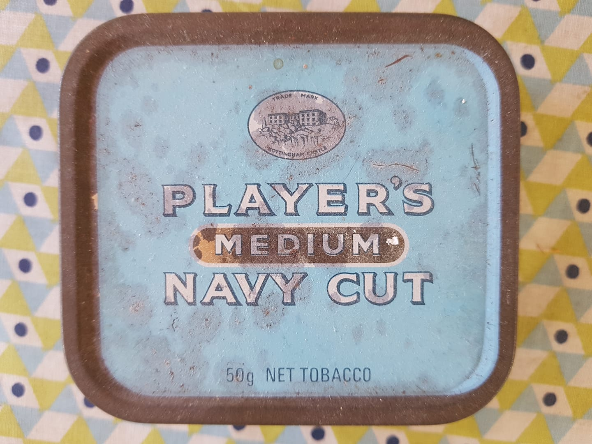

Voyages et Découvertes

Voyages et Découvertes
Sources d’Inspiration et Explorations Culturelles
Image de Référence

Philosophie des Voyages
Les voyages comme sources inépuisables d’inspiration, de découvertes et de compréhension interculturelle.
Approche
- Exploration attentive aux détails culturels
- Développement d’une sensibilité interculturelle
- Éveil de tous les sens
Projets et Séries
1. Série Bali Inspirations
Design Graphique et Culture
- Thème: Motifs traditionnels balinais
- Technique: Réinterprétation contemporaine
- Objectif: Fusion de l’héritage ancestral avec une esthétique moderne
Documentation Vidéo
2. Voyage Sensoriel
Exploration Multisensorielle
- Concept: La dégustation comme exploration culturelle
- Approche: Combinaison de :
- Connaissances techniques
- Sensibilité perceptive
- Contexte historique
Grille Sensorielle
- Observer
- Sentir
- Goûter
- Écouter
- Toucher
Documentation Vidéo
3. Carnets de Voyage
Narration Visuelle
- Contenu:
- Notes
- Croquis
- Photographies
- Technique: Méthode mixte
- Illustrations
- Collages
- Annotations personnelles
Documentation Vidéo
Dimensions des Voyages
- Culturelle: Immersion dans les traditions locales
- Artistique: Capture des nuances visuelles
- Personnelle: Transformation et croissance individuelle
Techniques de Documentation
- Photographie
- Illustration
- Écriture
- Enregistrements sonores
- Collecte d’objets et de matériaux
Principes Directeurs
- Observation profonde
- Respect des cultures
- Ouverture à l’inattendu
- Transformation par l’expérience
Impact
- Enrichissement personnel
- Développement d’une perspective globale
- Inspiration pour projets créatifs
- Compréhension interculturelle approfondie
Citation Inspirante
Les voyages sont des fragments de rêves cousus ensemble par la curiosité et l’émerveillement.
Trésor d'Eauze : Patrimoine Numérique Interactif
Trésor d’Eauze : Patrimoine Numérique Interactif
Présentation du Projet
Un projet de valorisation du patrimoine culturel qui combine photographie, recherche historique et conception d’expériences interactives pour rendre accessibles des trésors culturels.
Objectifs
- Préserver et valoriser le patrimoine archéologique
- Créer une expérience de médiation culturelle immersive
- Rendre l’histoire accessible à un large public
Technologies Utilisées
- Modélisation 3D
- Recherche Historique
- Médiation Culturelle
- Web Design
- Photogrammétrie
Capture d’Écran

Lien du Projet
Description Détaillée
Cette initiative démontre comment les technologies numériques peuvent servir la préservation et la médiation culturelle, en transformant des objets archéologiques en expériences interactives.
Approche
- Documentation visuelle approfondie
- Modélisation 3D d’objets archéologiques
- Contextualisation historique riche
- Création d’une expérience numérique immersive
Compétences Mises en Œuvre
- Photographie documentaire
- Modélisation 3D
- Recherche historique
- Conception d’expériences interactives
- Médiation culturelle numérique
Objets Numérisés
- Bague à sceau
- Bague aux camées
- Autres artefacts archéologiques
Impact
- Préservation numérique du patrimoine
- Accessibilité accrue à l’histoire locale
- Innovation dans la médiation culturelle
Techniques de Numérisation
- Photogrammétrie
- Acquisition multi-angles
- Traitement photographique avancé
- Reconstruction 3D détaillée
Exploration Interactive
Le projet permet aux utilisateurs de : - Explorer des objets historiques en détail - Comprendre le contexte archéologique - Découvrir l’histoire à travers des expériences immersives
Principes Fondamentaux
Principes Fondamentaux
Les Piliers de ma Démarche Créative et Analytique
1. Clarté : Rendre l’Impossible Compréhensible
Essence
- Transformer le complexe en accessible
- Démystifier les concepts techniques
- Créer des ponts de compréhension
Stratégies
- Déconstruction des idées complexes
- Utilisation de métaphores éclairantes
- Approche pédagogique et inclusive
2. Engagement : Créer une Connexion Émotionnelle
Philosophie
- Les données ne sont pas froides
- Chaque chiffre raconte une histoire
- L’information doit toucher et inspirer
Méthodes
- Contextualisation narrative
- Personnification des données
- Création de récits immersifs
3. Impact : Faciliter la Prise de Décision
Vision
- Au-delà de l’information
- Vers la transformation
- Générer des insights actionnables
Approche
- Analyse stratégique
- Recommandations concrètes
- Mise en perspective systémique
Mise en Pratique
Dimensions d’Application
- Projets de data storytelling
- Analyses stratégiques
- Médiations culturelles
- Documentations créatives
Outils et Techniques
- Visualisation de données
- Narration interdisciplinaire
- Design thinking
- Analyse contextuelle
Philosophie Intégrative
“La vraie compréhension naît là où la rigueur analytique rencontre la sensibilité narrative.”
Impacts Recherchés
- Éclairage des zones d’ombre
- Transformation des perspectives
- Inspiration et action
- Compréhension holistique
Conclusion
Des principes qui transcendent les disciplines, créant une approche unique de création et de communication de connaissances.
Prototype de Suivi Pédagogique
Prototype de Suivi Pédagogique
Présentation du Projet
Un prototype d’application conçu pour aider au suivi et à l’analyse de la progression des apprenants.
Fonctionnalités Principales
- Suivi de la progression des apprenants
- Génération de rapports d’analyse automatiques
- Identification des apprenants nécessitant un accompagnement personnalisé
Technologies Utilisées
- UX Design
- Tableau de bord
- Analyse de Données
- Python
- Visualisation de données
Capture d’Écran

Lien du Projet
Explorer l’Application de Suivi Pédagogique
Objectifs
- Faciliter le suivi des performances des apprenants
- Fournir des insights détaillés sur la progression
- Permettre une intervention personnalisée et ciblée
Fonctionnalités Détaillées
- Analyse comparative des performances
- Tableaux de bord interactifs
- Systèmes d’alerte pour les apprenants en difficulté
- Visualisation graphique des progrès
Compétences Mises en Œuvre
- Analyse de données éducatives
- Développement d’interfaces de suivi
- Conception de systèmes d’analyse prédictive
- Visualisation de données pédagogiques
Sources d'Inspiration : Les Voyages
Sources d’Inspiration : Les Voyages
Image Représentative
Philosophie des Voyages
Les voyages comme source intarissable de découvertes, de compréhension et de transformation personnelle.
Dimensions de l’Exploration
Approche Sensorielle
- Éveil de tous les sens
- Immersion totale
- Perception multidimensionnelle
Processus de Découverte
- Observation Attentive
- Détails culturels
- Nuances locales
-
Pratiques quotidiennes
-
Interaction Profonde
- Échanges humains
- Compréhension des traditions
- Dialogue interculturel
Transformation Personnelle
Développement de la Sensibilité
- Élargissement de la perspective
- Remise en question des préjugés
- Développement de l’empathie culturelle
Enrichissement Intellectuel
- Accumulation de connaissances
- Compréhension des systèmes culturels
- Déconstruction des narratifs simplistes
Méthodes de Documentation
Carnets de Voyage
- Croquis
- Notes manuscrites
- Photographies
- Collecte d’objets
- Annotations sensorielles
Techniques de Capture
- Photographie documentaire
- Illustration
- Écriture réflexive
- Enregistrements sonores
Régions et Inspirations
Asie du Sud-Est
- Bali
- Traditions artisanales
- Philosophies spirituelles
- Motifs culturels
Traditions Européennes
- Pratiques locales
- Patrimoine culturel
- Dynamiques sociales
Impact Créatif
Transformation des Expériences
- Inspiration pour projets artistiques
- Intégration dans les créations
- Réinterprétation culturelle
Projets Développés
- Série “Bali Inspirations”
- “Voyage Sensoriel”
- Carnets de voyage multimédias
Philosophie
“Voyager, c’est observer le monde comme un livre ouvert, où chaque expérience est une page à comprendre et à interpréter.”
Compétences Développées
- Observation interculturelle
- Adaptation
- Communication non-verbale
- Pensée comparative
- Créativité contextuelle
Conclusion
Les voyages comme processus continu d’apprentissage, de découverte et de transformation personnelle et créative.
Quiz Interactif NumPy : Apprentissage Dynamique en Data Science
Quiz Interactif NumPy : Apprentissage Dynamique en Data Science
Présentation du Projet
Un quiz interactif conçu pour tester et approfondir les connaissances en manipulation de données avec NumPy, illustrant une approche innovante d’apprentissage technologique.
Objectifs
- Tester les compétences en manipulation de données
- Fournir un apprentissage ludique et interactif
- Renforcer la compréhension des concepts NumPy
Technologies Utilisées
- Python
- NumPy
- Intelligence Artificielle
- E-learning
- Interfaces interactives
Capture d’Écran

Lien du Projet
Tester Vos Compétences avec le Quiz NumPy
Concept Pédagogique
Combinaison de l’apprentissage ludique avec des concepts techniques avancés de manipulation de données.
Fonctionnalités Principales
- Questions interactives sur NumPy
- Feedback immédiat
- Progression adaptative
- Couverture complète des concepts clés
Approche Pédagogique
- Apprentissage par l’interaction
- Mise en pratique immédiate des concepts
- Adaptation du niveau de difficulté
- Engagement actif de l’apprenant
Compétences Mises en Œuvre
- Développement d’outils éducatifs interactifs
- Conception d’interfaces pédagogiques
- Maîtrise technique de NumPy
- Conception de systèmes d’apprentissage adaptatifs